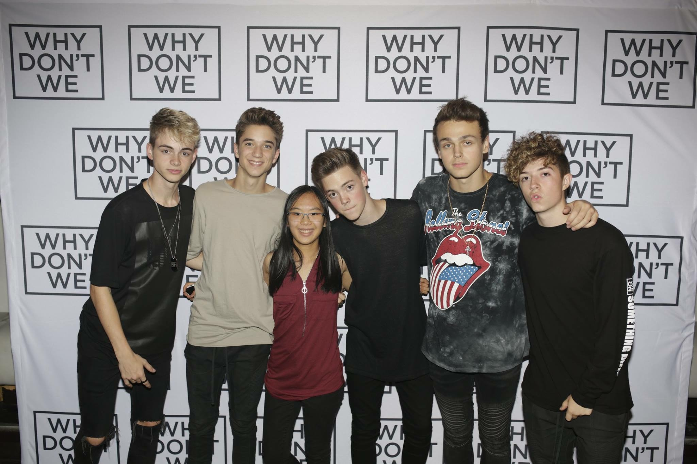

My favourite concert experience was when I went to see Why Don’t We the second time. I already saw them once before when they were first a band. The first time I met them was on February 02nd, 2016. I saw them on July 18th, 2017 and I got meet and greet tickets. Even though I met them once before, it’s always such a nice feeling, getting to see them again. The meet and greet was rushed so I did not get to talk to them as I would have liked. I decided to make a small fan project, where fans who haven’t had the chance to meet them, got to be able to say something. It was a notebook full of messages to them and it had their favourite songs. This was the first time I did something like that and I still hope the boys have it. It was an eventful and fun day. I waited with 2 of my friends. One of my friends had limelight and that means she got to hang out with them before the concert started. So my other friend and I waited together, it was her first time meeting them and it was nice to be with friends. It was a general admission concert meaning, you must get there early to get a good spot and you stand for the whole night. I was practically in the second row and it was such a good time. I was standing behind my friend who had limelight and it was nice because she tried to save us those spots. During one of their songs, there was a musical interlude, and they all came to the front of the stage. One of the band members who was standing in front of me, saw me hold my phone and took it from me. I was recording the video of them performing their song Taking You. He took my phone from me and said I love you. Overall, it was my favourite concert experience that I had because of the amount of fun I had. After the concert was over, my friends and I were sweating. Even though the meet and greet was rush, it was the best concert experience I have ever had. I enjoy going to concerts and I am lucky I have gotten to see them twice.
